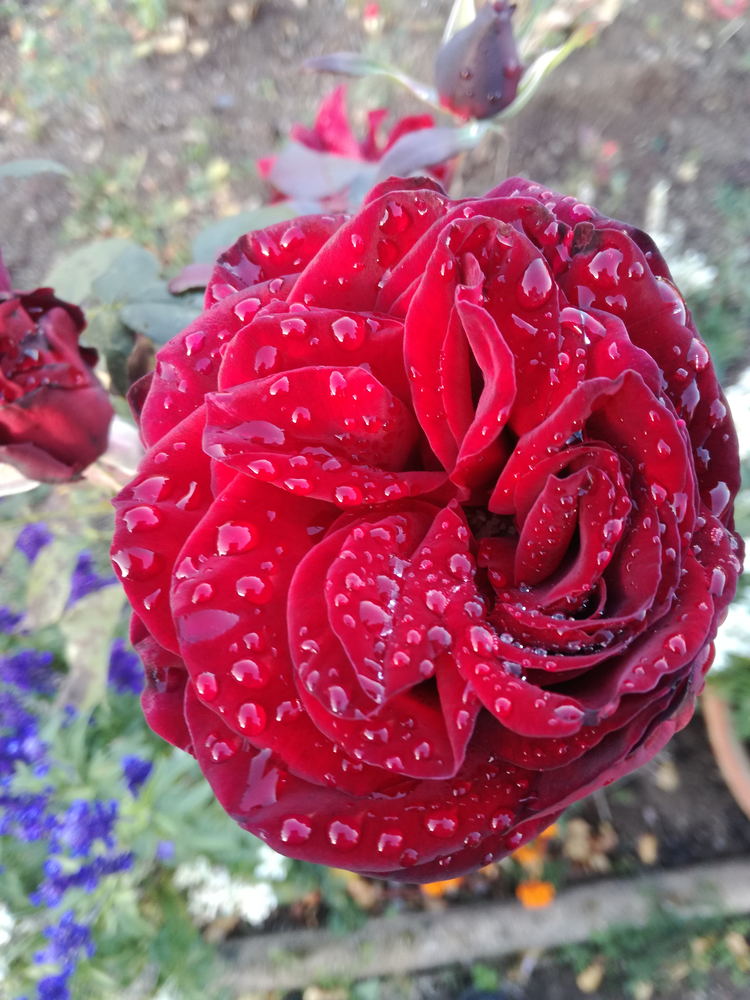
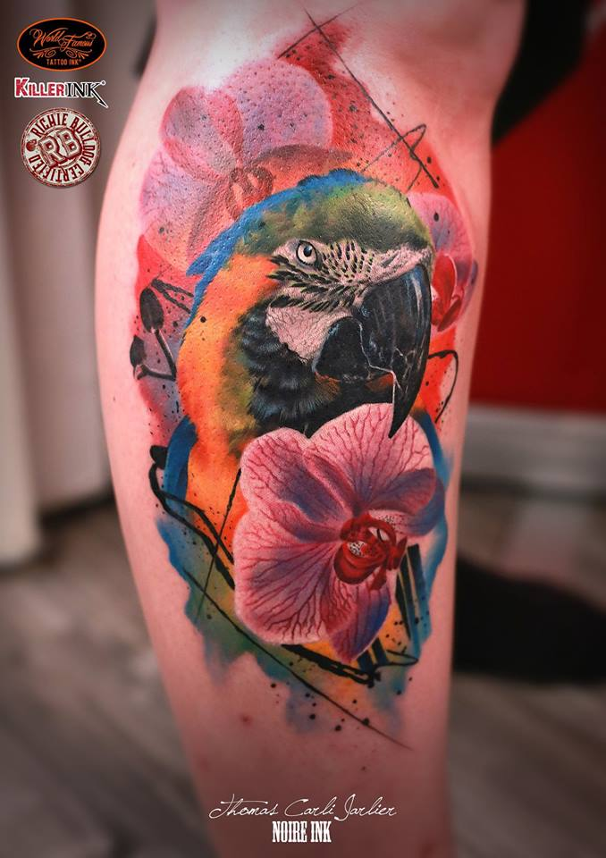
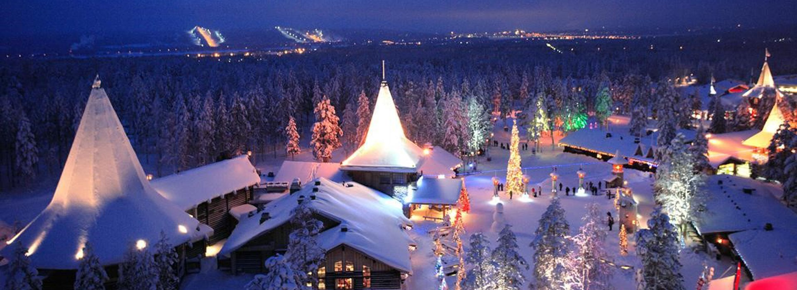
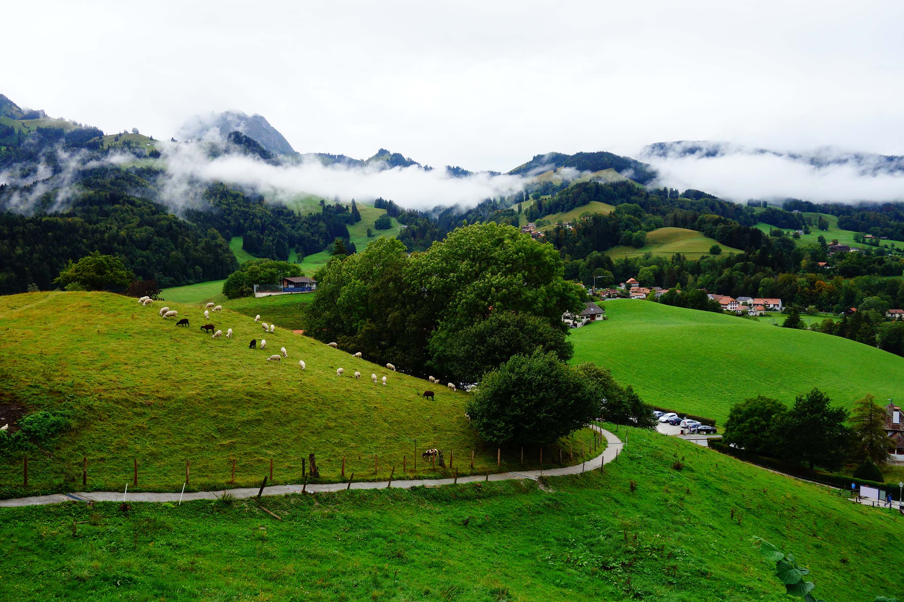
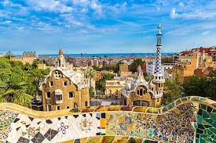
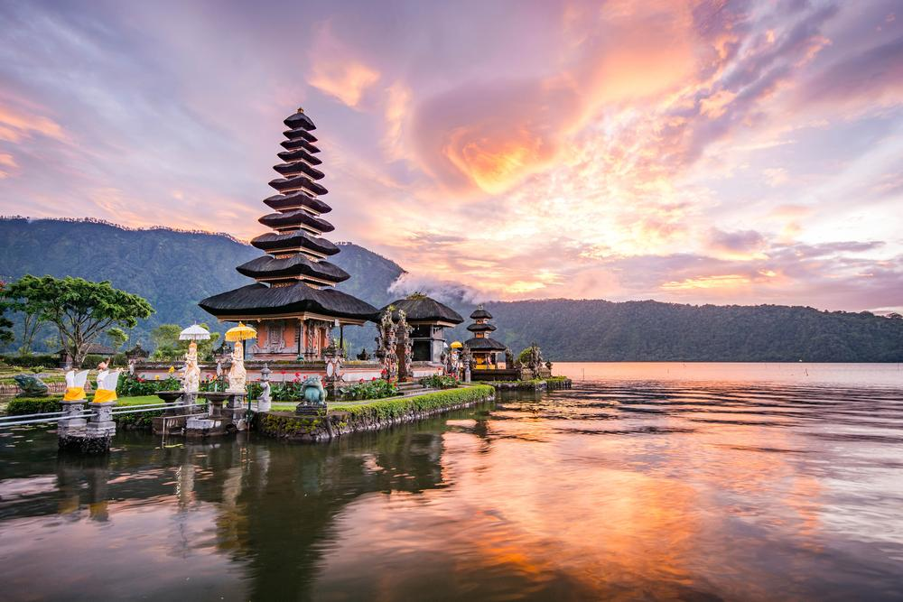
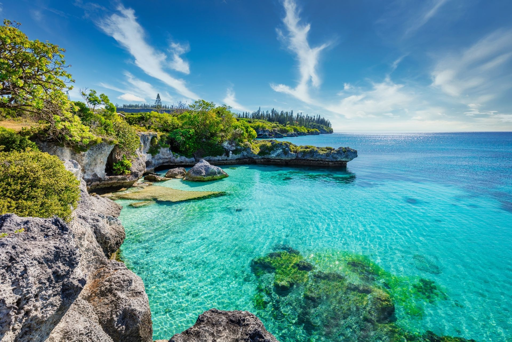

- La cuisine :
J'aime profiter les bonnes choses de la vie, la cuisine est un plaisir de faire plaisir au gens que j'aime et c'est un bon moment de partage !

- La photo :
Ce que j'aime dans la photo est la capture d'images de la nature et des gens sur des moments précis et le plaisir de les visualiser en souvenir.

- La coiffure :
Etant mon ancien métier, je suis toujours attirée par ce domaine là.
- Le tatouage :
L'art dans ce domaine m'attire énormément !

- Les activités manuelles :
Ces activités sont un moment de détente et de plaisir.

- La Laponie :
En grande rêveuse, j'aimerai aller découvrir le pays du Père Noël !

- La Suisse :
La Suisse, j'aimerai y retourner, pour en découvrir plus en paysage, gastronomie....

- L'espagne :
L'espagne, pour ses monuments, le soleil, et la culture.

- Bali :
La découverte de Bali pour les coutumes et traditions, les paysages, la découverte.

- La nouvelle calédonie :
Pour les même raison que Bali, mais également pour la culture du tatouage en méthode traditionnel.
